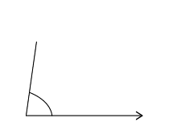
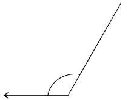
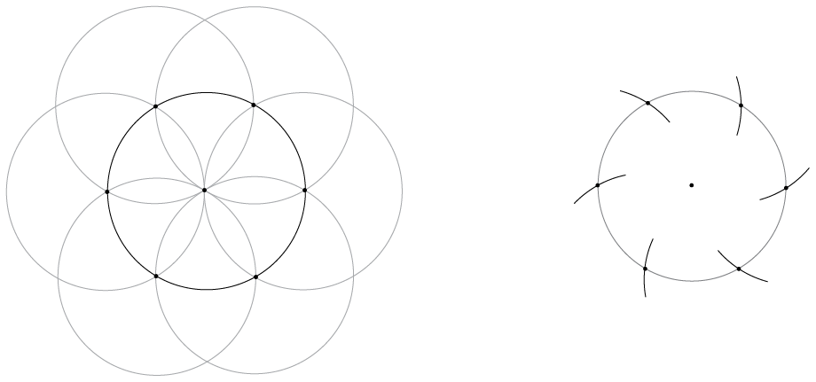
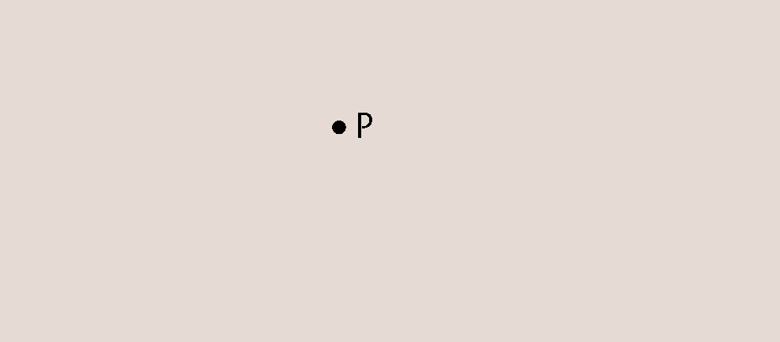

<div class="container">
  <div id="contents" class="col-md-12 main-content"><h1 xmlns="http://www.w3.org/1999/xhtml" id="toc-id-17">Konstruksie van meetkundige figure</h1><div xmlns="http://www.w3.org/1999/xhtml">
			    <p class="Body-opener-no-indent">In hierdie hoofstuk gaan jy
    leer hoe om meetkundige figure akkuraat te teken. Jy gaan ook
    die eienskappe wat verskillende figure het, ondersoek.</p>
			
    <h2 id="toc-id-18">Hersiening van hoeke</h2>
				<p class="Body-no-indent">Wanneer twee lyne in verskillende
    rigtings wys, sê ons hulle <b>vorm 'n hoek</b> met
    mekaar. As die rigtings amper dieselfde is, sê ons
    die <b>hoek</b> tussen hulle is klein. As die rigtings baie
    verskil, sê ons die hoek tussen hulle is
    groot.</p><b class="Body-text-bold-head">Woorde wat ons gebruik
    om hoeke te beskryf:</b>

			<div class="note">
      <ul><li class="Body-content-bullet"><span class="char-style-override-5"/> <b>Bene
        van die hoek:</b> Die twee lyne wat 'n hoek met mekaar
        vorm</li>

        <li class="Body-content-bullet"><span class="char-style-override-5"/> <b>Die
        hoekpunt:</b> Die punt waar die twee bene ontmoet</li>
      </ul></div>


				
 <b class="Body-text-bold-head">Simbole om hoeke te
    beskryf:</b>

    <div class="note">
      <p class="Body-content-no-indent"><b>Pylpunte</b> op die lyne
      beteken dat die lyne aangaan. Die lengte van 'n hoek se bene
      verander nie die grootte van die hoek nie. Of die bene lank
      is en of hulle kort is, die hoek se grootte bly
      dieselfde.</p><p>Daar is twee hoeke by ’n hoekpunt, so dit is
belangrik om te wys van watter een ons praat.
</p>
      				</div>

    <b class="Body-text-bold-head">Hoe om hoeke te merk:</b>

    <div class="note">
      <p class="Body-content-no-indent">Daar is baie verskillende
      maniere om hoeke te merk. Kyk na die voorbeelde hier
      onder:</p>
							<p class="Body-content-no-indent"/><p class="Body-content-no-indent">Jy kan die hoek hier regs
      op verskillende maniere <span>benoem: jy kan sê
\(\hat{ABC}\) of
\(\hat{CBA}\) of bloot \(\hat{B}\). <span>Die "kappie"</span> op die
      letter wys waar die hoek is.</span></p>
							<p class="Body-content-no-indent"/></div>
						</div><h3 xmlns="http://www.w3.org/1999/xhtml" class="Head-investigation">Hersiening: sien hoeke en beskryf hoeke</h3><ol xmlns="http://www.w3.org/1999/xhtml"><li><p class="Body-investigation">	Kyk na die tekening aan die
    regterkant. </p><div class="frame-2">
				</div><ol>
			<li><p class="ques-a--2-space-below">	Vorm hierdie lyne 'n hoek
    met mekaar? </p>
			<hr/><p class="ques-a--2-space-below">Moet die lyne sny om 'n hoek
    te vorm?</p>
			<hr/></li><li>
<p class="ques-a-">Gebruik 'n potlood en jou liniaal om die
    lyne 'n bietjie langer te trek sodat hulle ontmoet. Het jy die
    hoek tussen die lyne verander toe jy hulle verleng het?</p>
			<hr/></li></ol></li><li>
<p class="Body-investigation-hanging">	Rangskik die hoeke van
    die grootste tot die kleinste. Skryf net die letters (a) tot
    (f) in die korrekte volgorde. </p>
			<hr/><ol><li>
					</li><li>
			
					</li><li>
					</li>
		<li>
				</li>
				<li>
					</li>
				<li>
					</li>
			</ol></li><li>
			<p class="Body-investigation-hanging"><span>Hoe kan jy
    kontroleer dat 'n hoek 'n regte hoek is sonder om enige
    spesiale wiskundige toerusting te gebruik?
    (</span><i>Wenk</i><span>: Dink oor waar jy regte hoeke om jou
    kan vind.)</span></p>
			<hr/></li>
<li>
<p class="Body-investigation-hanging">	Is hierdie twee hoeke
    ewe groot? Beskryf hoe jy jou antwoord bepaal het.
    (<i>Wenk</i>: 'n Stuk afvalpapier kan help!)</p>			<div class="frame-2">
				</div></li>

			<li>
<p class="Body-investigation-hanging">	Twee lyne word getrek
    deur 'n liniaal neer te sit en lyne aan weerskante te trek. Wat
    kan jy oor die twee lyne sê? Vorm die lyne 'n hoek
    met mekaar?</p>			<div class="frame-2">
				</div></li>
<li>		
<p class="Body-investigation-hanging">	Kyk na die horlosie se
    wyserplaat. Die minuutwyser en die uurwyser vorm 'n hoek. Fokus
    vir eers op die kleiner hoek.</p><div class="frame-2">
				</div><ol>
			<li><p class="ques-a-">		Verduidelik waarom die hoek tussen die
    wysers by 8-uur dieselfde grootte is as die hoek by 4-uur.</p>
			<hr/></li>
<li>
<p class="ques-a-">Vergelyk die hoek by 2-uur met die hoek
    by 4-uur. Wat sien jy raak? Waarom is dit so?</p>
			<hr/></li><li>
<p class="ques-a-">	 Is die hoek by 3-uur dieselfde as die
    hoek by kwart oor 12? Verduidelik.</p>
			<hr/></li>
</ol></li><li>
<p class="Body-investigation-hanging">Wanneer jy die omslag
    van 'n hardebandboek oopmaak, kan jy verskillende hoeke maak.
    Kan jy aan ten minste vyf ander situasies in die alledaagse
    lewe dink waar voorwerpe deur hoeke gedraai word? Sê
    wat die bene en die hoekpunte in elk van jou voorbeelde is.</p>
			<hr/></li>
</ol><h2 xmlns="http://www.w3.org/1999/xhtml" id="toc-id-19">Die graad: 'n eenheid om hoeke te meet</h2><p xmlns="http://www.w3.org/1999/xhtml" class="Body-no-indent para-style-override-7">Verbeel jou dat
    ons nie eenhede gehad het om lengte in te meet nie:</p><p xmlns="http://www.w3.org/1999/xhtml" class="Body-Story-text"><i>Hoe sou kleremakers klere van die
    regte grootte kon maak sonder 'n maatband?</i></p><p xmlns="http://www.w3.org/1999/xhtml" class="Body-Story-text">Hoe sou 'n argitek 'n veilige en
    mooi huis kon ontwerp sonder 'n liniaal? Hoe sou ons 'n
    professionele sokkerveld kon uitlê sonder om
    akkuraat in meter te kan meet?</p><p xmlns="http://www.w3.org/1999/xhtml" class="Body-no-indent">Ons het eenhede en meetinstrumente in
    baie situasies nodig. Jy weet dat ons meter, sentimeter,
    kilometer, millimeter, ensovoorts gebruik om lengtes te
    meet.</p><p xmlns="http://www.w3.org/1999/xhtml" class="Body para-style-override-1">Ons moet ook eenhede
    hê om hoeke te meet. Die eenhede wat ons gebruik om
    hoeke te meet, is baie oud. Niemand is vandag heeltemal seker
    waarom nie, maar ons voorouers het baie duisende jare gelede
    besluit dat 'n omwenteling in 360 gelyke dele verdeel moet
    word. Ons noem hierdie dele grade. Die simbool vir 'n graad is
    °.</p><h3 xmlns="http://www.w3.org/1999/xhtml" class="Head-investigation">'n paar bekende hoeke in grade</h3><ol xmlns="http://www.w3.org/1999/xhtml"><li><p class="Body-investigation">Voltooi die tabel deur die
    grootte in te vul van elke hoek wat beskryf word.</p>
			<table id="table-88" class="No-Table-Style table-style-override-2"><tbody><tr class="Row-Column-34"><td class="cell-style-override-1">
							<p class="Table-header-left">Hoek (in woorde)</p>
						</td>
						<td class="cell-style-override-1">
							<p class="Table-header-centred">Hoek (grade)</p>
						</td>
					</tr><tr class="Row-Column-74"><td class="cell-style-override-1">
							<p class="Table-text-left">regte hoek</p>
						</td>
						<td class="cell-style-override-1">
							<p class="Table-text-centred">90°</p>
						</td>
					</tr><tr class="Row-Column-74"><td class="cell-style-override-1">
							<p class="Table-text-left">gestrekte hoek</p>
						</td>
						<td class="cell-style-override-1">
							<p class="ANSWERS-table-text-centred"/>
						</td>
					</tr><tr class="Row-Column-74"><td class="brown">
							<p class="Table-text-left">omwenteling</p>
						</td>
						<td class="brown">
							<p class="Table-text-centred">360°</p>
						</td>
					</tr><tr class="Row-Column-74"><td class="cell-style-override-1">
							<p class="Table-text-left">'n halwe regte hoek</p>
						</td>
						<td class="cell-style-override-1">
							<p class="ANSWERS-table-text-centred"/>
						</td>
					</tr><tr class="Row-Column-74"><td class="cell-style-override-1">
							<p class="Table-text-left">'n derde van 'n regte
            hoek</p>
						</td>
						<td class="cell-style-override-1">
							<p class="ANSWERS-table-text-centred"/>
						</td>
					</tr><tr class="Row-Column-74"><td class="cell-style-override-1">
							<p class="Table-text-left">'n kwart van 'n regte
            hoek</p>
						</td>
						<td class="cell-style-override-1">
							<p class="Table-text-centred">22,5°</p>
						</td>
					</tr><tr class="Row-Column-74"><td class="cell-style-override-1">
							<p class="Table-text-left">'n halwe gestrekte hoek</p>
						</td>
						<td class="cell-style-override-1">
							<p class="ANSWERS-table-text-centred"/>
						</td>
					</tr><tr class="Row-Column-74"><td class="cell-style-override-1">
							<p class="Table-text-left">'n driekwart van 'n
            omwenteling</p>
						</td>
						<td class="cell-style-override-1">
							<p class="ANSWERS-table-text-centred"/>
						</td>
					</tr><tr class="Row-Column-74"><td class="cell-style-override-1">
							<p class="Table-text-left">'n derde van 'n
            omwenteling</p>
						</td>
						<td class="cell-style-override-1">
							<p class="ANSWERS-table-text-centred"/>
						</td>
					</tr></tbody></table>
					</li><li><p class="Body-investigation">	 Kyk na die horlosie wat gewys
    word. Hoeveel grade:
</p><div class="frame-2">
				</div><ol>
			<li>
			<p class="ques-a-">	beweeg die minuutwyser in 'n uur?</p><hr/></li>
			<li>
<p class="ques-a-">		 beweeg die uurwyser in 'n uur?</p>
			<hr/></li></ol></li><li>
<p class="Body-investigation-hanging">	In Graad 6 het jy
    geleer dat hoeke in soorte geklassifiseer word. Voltooi die
    tabel. Die eerste ry is as 'n voorbeeld vir jou gedoen.</p>
    
    <table id="table-87" class="No-Table-Style table-style-override-2"><tbody><tr class="Row-Column-35"><td class="cell-style-override-1">
            <p class="Table-header-centred">Hoek</p>
          </td>

          <td class="cell-style-override-1">
            <p class="Table-header-centred">Grootte van hoek</p>
          </td>

          <td class="cell-style-override-1">
            <p class="Table-header-centred">Skets van die hoek</p>
          </td>
        </tr><tr class="Row-Column-340"><td class="cell-style-override-1">
            <p class="Table-text-centred">Skerphoek</p>
          </td>

          <td class="cell-style-override-1">
            <p class="Table-text-centred">Tussen 0° en
            90°</p>
          </td>

          <td class="cell-style-override-19">
			<p class="Table-text-centred"><span></span> </p>
          </td>
        </tr><tr class="Row-Column-340"><td class="cell-style-override-1">
            <p class="Table-text-centred">Regte hoek</p>
          </td>

          <td class="cell-style-override-1">

          </td>

          <td class="cell-style-override-19"/>
        </tr><tr class="Row-Column-340"><td class="cell-style-override-1">
            <p class="Table-text-centred">Stomphoek</p>
          </td>

          <td class="cell-style-override-1">

          </td>

          <td class="cell-style-override-19"/>
        </tr><tr class="Row-Column-340"><td class="cell-style-override-1">
            <p class="Table-text-centred">Gestrekte hoek</p>
          </td>

          <td class="cell-style-override-1">

          </td>

          <td class="cell-style-override-19"/>
        </tr><tr class="Row-Column-341"><td class="cell-style-override-1">
            <p class="Table-text-centred">Inspringende hoek</p>
          </td>

          <td class="cell-style-override-1">

          </td>

          <td class="cell-style-override-19"/>
        </tr><tr class="Row-Column-340"><td class="cell-style-override-1">
            <p class="Table-text-centred">Omwenteling</p>
          </td>

          <td class="cell-style-override-1">

          </td>

          <td class="cell-style-override-19"/>
        </tr></tbody></table></li></ol>
        <h3 xmlns="http://www.w3.org/1999/xhtml" class="Head-investigation">Vergelyk hoeke deur te gebruik</h3><p xmlns="http://www.w3.org/1999/xhtml" class="Body-no-indent">Jy het 'n vel A4-papier nodig. By die
    hoeke het jy vier regte hoeke. Nommer hulle en skeur die hoeke
    af soos in die diagram gewys word. Moet hulle nie te klein maak
    nie.</p><div xmlns="http://www.w3.org/1999/xhtml" class="frame-2"></div><p xmlns="http://www.w3.org/1999/xhtml" class="Body">Gebruik nou jou genommerde regte hoeke om die
    volgende situasies te ondersoek:</p><ol xmlns="http://www.w3.org/1999/xhtml"><li><p class="Body-investigation-hanging">
Wys dat 'n gestrekte
    hoek twee regte hoeke is.</p>	<p class="Body-investigation-hanging">Jy kan dit wat jy gedoen
    het hier skets.</p>  </li>
		  <li><p class="Body-investigation-hanging">Wys dat 'n omwenteling
    vier regte hoeke is.</p>			<p class="Body-investigation-hanging">	Jy kan dit wat jy gedoen
    het hier skets.</p>    </li>
<li><p class="Body-investigation-hanging">	Skep 'n regte
    hoek deur drie van jou genommerde hoeke te gebruik. Jy kan
    dit wat jy gedoen het hier skets.</p>    <hr/></li>
			<li><p class="Body-investigation-hanging"> Beskryf hoe jy een van
    jou genommerde hoeke kan gebruik om te kontroleer of 'n hoek
    skerp, stomp of 'n regte hoek is.</p>
			<hr/></li>
<li><ol><li>
<p class="ques-a-">Vou hoek 1 sodat jy dit kan gebruik
    om 45° mee te meet. </p></li><li>
			<p class="ques-a-"> Vou hoek 2 sodat jy dit kan gebruik om
    30° mee te meet.</p></li><li>
			<p class="ques-a-">Vou hoek 3 sodat jy dit kan gebruik om
    22,5° mee te meet.</p></li><li>
			<p class="ques-a-">Wat is die grootste: 'n regte hoek
    <i>of</i> 'n halwe regte hoek + 'n derde van 'n regte hoek + 'n
    kwart van 'n regte hoek? Kan jy 'n berekening doen om dit te
    bewys?</p>
			<hr/></li>
</ol></li>
</ol><p xmlns="http://www.w3.org/1999/xhtml" class="Body-no-indent para-style-override-1">
    <b>Belangrik:</b> Hou jou gevoude stukkies papier vir die
    volgende les!</p><h2 xmlns="http://www.w3.org/1999/xhtml" id="toc-id-20">Gebruik van die gradeboog</h2><div xmlns="http://www.w3.org/1999/xhtml" class="note">
      <p class="Body-content-no-indent">Ons het 'n spesiale
      instrument om hoeke mee te meet. Dit word 'n <b>gradeboog</b>
      genoem. Kyk na die prent van 'n tipiese gradeboog met sy
      belangrike dele gemerk.</p>
      <p>Gradeboë kan groot of klein wees maar
hulle meet almal grade op presies dieselfde
manier. Die grootte van die gradeboog maak
nie ’n verskil aan ’n hoek se grootte nie.
</p>
    </div><h3 xmlns="http://www.w3.org/1999/xhtml" class="Head-investigation">Meet 'n paar bekende hoeke</h3><p xmlns="http://www.w3.org/1999/xhtml" class="Body-no-indent">Jy het die vier gevoude hoeke van die
    vorige aktiwiteit nodig. As jy nie daardie aktiwiteit gedoen
    het nie, blaai nou terug en volg die instruksies in vraag
    5.</p><ol xmlns="http://www.w3.org/1999/xhtml"><li><p class="Body-investigation-hanging">Werk in 'n groep van
    drie of vier en gebruik julle gradeboë om die hoeke
    te meet wat julle gemaak het: 90°; 45°;
    30° en 22,5°.</p></li><li>
			<p class="Body-investigation">Het julle die korrekte grootte
    hoek gemeet? Indien nie, vra vir julleself die
    volgende vrae:</p></li>
			</ol><ul xmlns="http://www.w3.org/1999/xhtml"><li class="Body-bullet "> Het julle
      die hoekpunt van julle hoek by die oorsprong van die
      gradeboog gesit?</li>
				<li class="Body-bullet">Is die
      onderste been van julle hoeke in lyn met die basislyn?</li>
				<li class="Body-bullet "> Het julle
      julle hoeke korrek gevou?</li>
			</ul><h3 xmlns="http://www.w3.org/1999/xhtml" class="Head-investigation">Hoe om 'n gradeboog te gebruik om 'n hoek te meet</h3><p xmlns="http://www.w3.org/1999/xhtml" class="Body-bold-head--Steps-"><b>Stap 1: Is die hoek se
    bene lank genoeg?</b></p><p xmlns="http://www.w3.org/1999/xhtml" class="Body-no-indent">Die hoek se bene moet effens langer
    wees as die afstand van die oorsprong van die gradeboog af tot
    by sy rand. As hulle te kort is, gebruik 'n skerp potlood en 'n
    liniaal om hulle langer te maak. Maak seker dat jy die liniaal
    in lyn bring met die been.</p><div xmlns="http://www.w3.org/1999/xhtml">
				<div class="frame-2">
					</div>
				<div class="frame-2">
					</div>
			</div><p xmlns="http://www.w3.org/1999/xhtml" class="Body-no-indent">Jy is nou gereed om jou hoek te begin
    meet.</p><p xmlns="http://www.w3.org/1999/xhtml" class="Body-bold-head--Steps-"><b>Stap 2: Bring die hoek en jou
    gradeboog in lyn</b></p><p xmlns="http://www.w3.org/1999/xhtml" class="Body-no-indent">Sit jou gradeboog bo-op die hoek
    neer. Maak seker van die volgende:</p><ul xmlns="http://www.w3.org/1999/xhtml"><li class="Body-bullet"><span class="char-style-override-5"/> die
      oorsprong is presies op die hoekpunt van die hoek, en</li>

      <li class="Body-bullet"><span class="char-style-override-5"/> die
      basislyn is presies bo-op een van die bene van die hoek.</li>
    </ul><p xmlns="http://www.w3.org/1999/xhtml" class="Body-no-indent">Hou aan om die posisie van die
    gradeboog aan te pas tot die oorsprong en die basislyn presies
    in lyn is.</p><p xmlns="http://www.w3.org/1999/xhtml"> </p><div xmlns="http://www.w3.org/1999/xhtml"></div><p xmlns="http://www.w3.org/1999/xhtml" class="Body-no-indent">Sodra jou gradeboog op die korrekte
    plek is, hou 'n vinger op die gradeboog om te keer dat dit
    skuif. As dit skuif… begin oor! Jy is nou
    gereed om metings te doen.</p><p xmlns="http://www.w3.org/1999/xhtml" class="Body-bold-head--Steps-"><b>Stap 3: Meet die hoek</b></p><p xmlns="http://www.w3.org/1999/xhtml" class="Body-no-indent">'n Gradeboog gee 'n kloksgewyse
    gradeskaal en 'n antikloksgewyse skaal. Jy kies die regte een
    deur die een te soek wat met 0° op die hoek se been
    begin. Kyk na waar die ander hoek se been onder die gradeskaal
    gaan. Dit is waar jou afmeting is.</p><p xmlns="http://www.w3.org/1999/xhtml" class="Body-no-indent"><span></span> </p><p xmlns="http://www.w3.org/1999/xhtml" class="Body-no-indent">Jy kan ook die gradeboog op die hoek
    sit deur die ander been te gebruik. Dan lyk die korrekte
    posisie só:</p><p xmlns="http://www.w3.org/1999/xhtml" class="Body-no-indent"><span></span> </p><p xmlns="http://www.w3.org/1999/xhtml" class="Body-no-indent">Die hoek in die prente hier bo is
    37°. Stem jy saam? Kan jy sien dat daar twee maniere
    is om 'n hoek te meet?</p><h3 xmlns="http://www.w3.org/1999/xhtml" class="Head-investigation">Oefen om met 'n gradeboog te meet</h3><ol xmlns="http://www.w3.org/1999/xhtml"><li><p class="Body-investigation-hanging">
 Meet die hoeke en
    voltooi die tabel op die volgende bladsy. Jy kan die bene
    verleng as dit nodig is; dit maak nie saak as hulle oor teks of
    'n ander tekening gaan nie.</p><ol><li>
			
			<p class="Body-no-indent"><span></span> </p></li><li>
<p class="Body-no-indent"><span></span> </p></li><li><p class="Body-no-indent"><span></span> </p></li><li><p class="Body-no-indent"><span></span> </p></li><li><p class="Body-no-indent"><span></span> </p></li><li><p class="Body-no-indent"><span></span> </p></li></ol>
			<table id="table-91" class="No-Table-Style table-style-override-2"><tbody><tr class="Row-Column-200"><td class="cell-style-override-1">
							<p class="Table-header-left">Hoek</p>
						</td>
						<td class="cell-style-override-1">
							<p class="Table-text-centred">(a)</p>
						</td>
						<td class="cell-style-override-1">
							<p class="Table-text-centred">(b)</p>
						</td>
						<td class="cell-style-override-1">
							<p class="Table-text-centred">(c)</p>
						</td>
						<td class="cell-style-override-1">
							<p class="Table-text-centred">(d)</p>
						</td>
						<td class="cell-style-override-1">
							<p class="Table-text-centred">(e)</p>
						</td>
						<td class="cell-style-override-1">
							<p class="Table-text-centred">(f)</p>
						</td>
					</tr><tr class="Row-Column-200"><td class="cell-style-override-1">
							<p class="Table-header-left">Hoekgrootte in grade</p>
						</td>
						<td class="cell-style-override-1">
							<p class="ANSWERS-table-text-centred"/>
						</td>
						<td class="cell-style-override-1">
							<p class="ANSWERS-table-text-centred"/>
						</td>
						<td class="cell-style-override-1">
							<p class="ANSWERS-table-text-centred"/>
						</td>
						<td class="cell-style-override-1">
							<p class="ANSWERS-table-text-centred"/>
						</td>
						<td class="cell-style-override-1">
							<p class="ANSWERS-table-text-centred"/>
						</td>
						<td class="cell-style-override-1">
							<p class="ANSWERS-table-text-centred"/>
						</td>
					</tr></tbody></table>
					</li>
					<li><p class="Body-investigation-hanging">	Meet al die genommerde
    hoeke in die volgende figuur. Party hoeke kan direk gemeet
    word, ander nie. Jou gradeboog kan nie inspringende hoeke soos
    hoek 7 en 8 meet nie. Jy sal dus 'n plan moet maak!</p>
			<div class="frame-2">
				</div>
			<table id="table-92" class="No-Table-Style table-style-override-2"><tbody><tr class="Row-Column-200"><td class="cell-style-override-1">
							<p class="Table-header-centred">Hoek</p>
						</td>
						<td class="cell-style-override-1">
							<p class="Table-header-centred">Grootte</p>
						</td>
					</tr><tr class="Row-Column-200"><td class="cell-style-override-1">
							<p class="Table-text-centred">1</p>
						</td>
						<td class="cell-style-override-1">
							<p class="ANSWERS-table-text-centred"/>
						</td>
					</tr><tr class="Row-Column-200"><td class="cell-style-override-1">
							<p class="Table-text-centred">2</p>
						</td>
						<td class="cell-style-override-1">
							<p class="ANSWERS-table-text-centred"/>
						</td>
					</tr><tr class="Row-Column-200"><td class="cell-style-override-1">
							<p class="Table-text-centred">3</p>
						</td>
						<td class="cell-style-override-1">
							<p class="ANSWERS-table-text-centred"/>
						</td>
					</tr><tr class="Row-Column-200"><td class="cell-style-override-1">
							<p class="Table-text-centred">4</p>
						</td>
						<td class="cell-style-override-1">
							<p class="ANSWERS-table-text-centred"/>
						</td>
					</tr><tr class="Row-Column-200"><td class="cell-style-override-1">
							<p class="Table-text-centred">5</p>
						</td>
						<td class="cell-style-override-1">
							<p class="ANSWERS-table-text-centred"/>
						</td>
					</tr><tr class="Row-Column-200"><td class="cell-style-override-1">
							<p class="Table-text-centred">6</p>
						</td>
						<td class="cell-style-override-1">
							<p class="ANSWERS-table-text-centred"/>
						</td>
					</tr><tr class="Row-Column-200"><td class="cell-style-override-1">
							<p class="Table-text-centred">7</p>
						</td>
						<td class="cell-style-override-1">
							<p class="ANSWERS-table-text-centred"/>
						</td>
					</tr><tr class="Row-Column-200"><td class="cell-style-override-1">
							<p class="Table-text-centred">8</p>
						</td>
						<td class="cell-style-override-1">
							<p class="ANSWERS-table-text-centred"/>
						</td>
					</tr><tr class="Row-Column-200"><td class="cell-style-override-1">
							<p class="Table-text-centred">9</p>
						</td>
						<td class="cell-style-override-1">
							<p class="ANSWERS-table-text-centred"/>
						</td>
					</tr><tr class="Row-Column-200"><td class="cell-style-override-1">
							<p class="Table-text-centred">10</p>
						</td>
						<td class="cell-style-override-1">
							<p class="ANSWERS-table-text-centred"/>
						</td>
					</tr><tr class="Row-Column-200"><td class="cell-style-override-1">
							<p class="Table-text-centred">11</p>
						</td>
						<td class="cell-style-override-1">
							<p class="ANSWERS-table-text-centred"/>
						</td>
					</tr><tr class="Row-Column-200"><td class="cell-style-override-1">
							<p class="Table-text-centred">12</p>
						</td>
						<td class="cell-style-override-1">
							<p class="ANSWERS-table-text-centred"/>
						</td>
					</tr></tbody></table>
					</li>
					<li><p class="Body-investigation">Skryf hier vir jouself 'n kort
    nota oor die meting van inspringende hoeke:</p>
			<hr/></li>
</ol>
<h3 xmlns="http://www.w3.org/1999/xhtml">'n paar dinge om oor na te dink</h3><div xmlns="http://www.w3.org/1999/xhtml" class="extension">
							<p class="Body-box-no-indent">Kyk na jou antwoorde in
            vraag 2.</p>
							<ol><li><p class="Body-box-numbers--a---Space-above-">	Hoe
            vergelyk hoek 3 en hoek 4?</p><hr/></li>
<li>							
							<p class="Body-box-numbers--a---Space-above-">	Wat
            van hoek 6 en hoek 7?
</p><hr/></li>
	<li>						<p class="Body-box-numbers--a---Space-above-">	Wat
            van hoek 4 en hoek 5?</p>
					
<hr/></li><li>
	    <p class="Body-box-numbers--a---Space-above-">	Daar
            is 'n paar interessante idees hier. Probeer om dit
            verder te ondersoek en wys vir jou onderwyser wat jy
            ontdek het.</p>
</li></ol></div><h2 xmlns="http://www.w3.org/1999/xhtml" id="toc-id-21">Gebruik van 'n gradeboog om hoeke te konstrueer</h2><h3 xmlns="http://www.w3.org/1999/xhtml" class="Head-investigation--after-b-head-">Konstrueer hoeke teen 'n gegewe lyn</h3><p xmlns="http://www.w3.org/1999/xhtml" class="Body-no-indent">Werk saam met 'n maat aan hierdie
    aktiwiteit. Jy het jou gradeboog, 'n skerp potlood en 'n reguit
    liniaal nodig.</p><ol xmlns="http://www.w3.org/1999/xhtml"><li><p class="Body-investigation-hanging">
Jou eerste uitdaging
    is om 'n lyn presies reghoekig met die een hier onder te
    konstrueer. Begin deur 'n punt op die lyn te kies. Jy moet
    hierdie punt duidelik en netjies met 'n klein kolletjie merk.
    Gebruik dan jou begrip van 'n gradeboog om 'n hoek van
    90° te trek.</p><p class="Body-no-indent"><span></span> </p></li>
			
			<li><p class="Body-investigation">	Vul nou die ontbrekende woorde
    in die stappe in:</p>			<p class="Body-investigation-spaced"><b>Stap 1:</b> Kies 'n
    punt iewers op die lyn. Maak 'n klein merkie op die lyn. (Jy
    het nie altyd hier 'n keuse nie. Soms moet jy 'n spesifieke
    punt op die lyn gebruik.)</p>

    <p class="Body-investigation-spaced"><b>Stap 2:</b> Plaas die
    gradeboog met sy</p>
    <hr/><p class="Body-investigation-spaced">op die lyn en sy oorsprong
    presies bo-op die</p>
    <hr/><p class="Body-investigation-spaced"><b>Stap 3:</b> Maak 'n
    klein, duidelike merkie by die</p>
    <hr/><p class="Body-investigation-spaced"><b>Stap 4:</b> Gebruik 'n
    liniaal om die twee</p>
    <hr/><p class="Body-investigation-spaced">in lyn te bring en trek 'n
    reguit lyn wat presies deur hulle gaan.</p></li>

			<li><p class="Body-investigation-hanging&#10;para-style-override-40">Konstrueer die hoeke deur die lyn hier onder te gebruik. Die
    lyn sal een been wees van die hoeke wat jy gaan konstrueer. Die
    hoekpunt vir elk van jou hoeke is die punt wat O gemerk is waar
    die kort vertikale lyn die lang horisontale lyn sny. Jou hoeke
    moet <i>antikloksgewys</i> van die lyn af gemeet word.</p>
    
    <ol><li>
			
			<p class="ques-a-">	23°</p></li><li><p class="ques-a-">	45°</p></li><li><p class="ques-a-">	
65°</p></li><li><p class="ques-a-">	 79°</p></li><li><p class="ques-a-">	90° </p></li><li>
			<p class="ques-a-">	121°</p></li><li><p class="ques-a-">	 154°</p></li><li><p class="ques-a-">
180°</p></li><li><p class="ques-a-">200°</p></li><li><p class="ques-a-"> 270°</p></li><li>	<p class="ques-a-">		300°	</p></li></ol>

    <div class="aside">
      <p class="Body-box-no-indent"><b>Hoekrigting</b></p>

      <p class="Body-box-no-indent">Die lyn wat hier onder vir</p>

      <p class="Body-box-no-indent">jou gegee is, word 'n
      <b>verwysingslyn</b> genoem.</p>

      <p class="Body-box">Wiskundiges meet hoeke gewoonlik
      <b>antikloksgewys</b> van die verwysingslyn af.</p>
    </div>
			<p class="Body-no-indent"><span></span> </p></li>

			<li><p class="Body-investigation-hanging">	Gebruik die lyn hier
    onder. Jy moet op elke punt lyne met 'n hoek van 60°
    trek om 'n driehoek te vorm.
    Watter soort driehoek is dit?</p>
			<p class="Body-no-indent"><span></span> </p></li>

			<li><p class="Body-investigation"> Voltooi die vierhoek hier
    onder. Die hoek by P moet 52° wees en die een by Q,
    23°.</p>			<p class="Body-no-indent para-style-override-31"><span></span> </p></li>


			</ol><h2 xmlns="http://www.w3.org/1999/xhtml" id="toc-id-22">Ewewydige en loodregte lyne</h2><div xmlns="http://www.w3.org/1999/xhtml" class="note">      <p class="Body-content-no-indent"><b>Loodregte lyne</b> sny
      mekaar teen 'n hoek</p>

      <p class="Body-content-no-indent">van 90°.</p>

      <p class="Body-content-no-indent">Die skets wys twee
      loodregte lyne.</p>

      <p class="Body-content-no-indent">Ons sê: AB is
      loodreg op DC.</p>

      <p class="Body-content-no-indent">Ons skryf: AB <span class="char-style-override-8">⊥</span> DC</p>

      <p class="Body-content-no-indent"/>
						</div><p xmlns="http://www.w3.org/1999/xhtml">	</p><div xmlns="http://www.w3.org/1999/xhtml" class="note"> <p class="Body-content-no-indent"><b>Ewewydige lyne</b> sny
      mekaar nooit nie. Hulle is altyd op dieselfde afstand van
      mekaar. Hulle het dieselfde rigting.</p>

      <p class="Body-content-no-indent">Die skets wys twee
      ewewydige lyne.</p>

      <p class="Body-content-no-indent">Ons sê: PQ is
      ewewydig aan RS.</p>

      <p class="Body-content-no-indent">Ons skryf: PQ
      <span>||</span> RS</p>

      <p class="Body-content-no-indent">Die pyltjies op die middel
      van die lyne wys dat die lyne ewewydig aan mekaar is.</p>

      <p class="Body-content-no-indent"/>
							<p class="Body-content-no-indent"><b/></p></div><h3 xmlns="http://www.w3.org/1999/xhtml" class="Head-investigation">Konstrueer loodregte en ewewydige lyne</h3><p xmlns="http://www.w3.org/1999/xhtml" class="Body-no-indent">Wanneer jy ewewydige lyne konstrueer,
    onthou dat die lyne altyd dieselfde afstand van mekaar af bly.
    Volg die stappe hier onder om loodregte en ewewydige lyne te
    trek deur 'n gradeboog en 'n liniaal te gebruik.</p><ol xmlns="http://www.w3.org/1999/xhtml"><li><p class="Body-investigation">	Ons wil 'n lyn trek wat
    ewewydig aan XY is en wat deur punt A gaan.</p>			<p class="Body-no-indent para-style-override-7"><span></span> </p>
			<p class="Body-bold-head--Steps- para-style-override-30"><b>Stap
    1: Trek 'n loodregte lyn tussen A en XY.</b></p>

    <p class="Body-no-indent para-style-override-30">Gebruik jou
    gradeboog om 'n lyn te trek wat deur A gaan en 'n hoek van
    90° met XY</p>

    <p class="Body-no-indent para-style-override-30">vorm. Merk die
    punt C waar jou nuwe lyn aan XY raak.</p>

    <p class="Body-no-indent para-style-override-30">Kyk na die
    skets hier onder as jy vashaak.</p>
			<p class="Body-bold-head--Steps-&#10;para-style-override-32"/><div></div><p><b>Stap 2: Meet die loodregte afstand
    tussen die punt en die lyn.</b></p>
			<p class="Body-no-indent para-style-override-30">Skryf die
    lengte van AC neer:</p>
    <hr/><p class="Body-bold-head--Steps- para-style-override-30"><b>Stap
    3: Teken 'n punt wat dieselfde afstand vanaf die lyn is.</b></p>

    <p class="Body-no-indent para-style-override-30">Trek nog 'n
    lyn wat loodreg op lyn XY is.</p>

    <p class="Body-no-indent para-style-override-30">Merk dieselfde
    lengte as AC op daardie lyn af.</p>

    <p class="Body-no-indent para-style-override-30">Die skets wys
    wat jy moet doen.</p>
			<p class="Body-no-indent"><span></span> </p>
			<p class="Body-bold-head--Steps- para-style-override-30"><b>Stap
    4: Trek die ewewydige lyn.</b></p>

    <p class="Body-no-indent para-style-override-30">Verbind A met
    die nuwe punt wat 'n gelyke afstand weg van XY af is.</p>

    <p class="Body-no-indent para-style-override-30">Jy het nou 'n
    ewewydige lyn.</p>
			<p class="Body-no-indent"><span></span> </p></li>
			

			<li><p class="Body-investigation-hanging&#10;para-style-override-1">	Oefen in jou oefeningboek om loodregte en ewewydige lyne te
    konstrueer deur 'n gradeboog en 'n liniaal te gebruik.</p></li></ol>
    <h2 xmlns="http://www.w3.org/1999/xhtml" id="toc-id-23">Sirkels is baie spesiale figure</h2><p xmlns="http://www.w3.org/1999/xhtml" class="Body-no-indent">En nou vir iets effens
    anders... kom ons kyk na <b>sirkels</b>.</p><h3 xmlns="http://www.w3.org/1999/xhtml" class="Head-investigation">'n sirkel met tou</h3><p xmlns="http://www.w3.org/1999/xhtml" class="Body-no-indent">Jy sal dalk hier saam met 'n maat
    moet werk. Jy het twee skerp potlode en 'n kort stukkie tou, 'n
    A4-vel papier en 'n liniaal nodig.</p><ol xmlns="http://www.w3.org/1999/xhtml"><li><p class="Body-investigation-hanging">
Knoop die tou met
    dubbelknope aan albei potlode vas. Die knope moet ferm maar nie
    styf wees nie. Die tou moet maklik om die potlode swaai sonder
    om af te val. Nadat jy jou tou geknoop het, moet die afstand
    tussen die potlode wanneer die tou styf is nie meer as 8 cm
    wees nie.</p></li><li>
			<p class="Body-investigation-hanging">	Jou maat moet een
    potlood <i>vertikaal</i> met sy punt naby aan die middel van
    die vel papier hou.</p></li><li>
			<p class="Body-investigation-hanging">	Beweeg nou die punt
    van jou potlood versigtig om jou maat se potlood en teken soos
    <span>jy beweeg. Probeer om die tou</span> <i>styf</i>
    <span>(</span><i>gerek</i><span>) te hou en die potlood</span>
    <i>vertikaal</i> <span>terwyl jy teken.</span></p>
        <p class="Body-investigation-hanging">As jy versigtig was, het
    jy 'n sirkel (wel, hopelik iets redelik naby aan 'n sirkel).
    Julle kan nou omruil sodat jou maat ook 'n beurt kry om 'n
    sirkel te teken terwyl jy die ander potlood vashou.</p>

    </li><li>
			<p class="Body-investigation-hanging">	Merk drie punte op die
    sirkelrand. Meet die afstand tussen elkeen van die punte en die
    middelpunt van die sirkel. As jy 'n sirkel het, behoort jy te
    vind dat die afstande dieselfde is.</p></li>
</ol><div xmlns="http://www.w3.org/1999/xhtml" class="aside">
      <p class="Body-box-no-indent"><b>Dink hieroor</b></p>

      <p class="Body-box-no-indent">Kan jy aan enige ander figuur
      dink waar die afstand tussen die middelpunt en die rand
      konstant is in alle rigtings?</p>

      <ul><li class="Body-box-bullets"><span class="char-style-override-27"/> 'n
        Vierkant?</li>

        <li class="Body-box-bullets"><span class="char-style-override-27"/> 'n
        Seshoek?</li>

        <li class="Body-box-bullets"><span class="char-style-override-27"/> Wat van
        'n ovaal figuur (ellips)?</li>
      </ul><p class="Body-box-no-indent">Stel ondersoek in om te kyk wat
      jy kan vind.</p>
    </div><div xmlns="http://www.w3.org/1999/xhtml" class="note">
      <p class="Body-content-no-indent">Sirkels is om baie redes
      spesiaal. Die heel belangrikste rede is die volgende:</p>

      <p class="Body-content-no-indent"><b>Die afstand vanaf die
      middelpunt van 'n sirkel tot by die rand is dieselfde in
      enige rigting.</b></p>
      <p>Hierdie afstand word die <b>radius</b> of die <b>straal</b> van
die sirkel genoem.
</p>
    </div><p xmlns="http://www.w3.org/1999/xhtml" class="Body-no-indent para-style-override-1">Stem jy saam
    dat die twee potlode en tou nie 'n goeie manier is om sirkels
    te teken nie? Die tou rek. Die radius is moeilik om te
    verander. En die potlood waarmee jy teken kan koers verloor en
    'n spiraal of 'n bewerige kromme maak. Ons het iets beters
    nodig.</p><h2 xmlns="http://www.w3.org/1999/xhtml" id="toc-id-24">Gebruik van die passer</h2><p xmlns="http://www.w3.org/1999/xhtml" class="Body-no-indent para-style-override-7">Ons het 'n
    spesiale instrument nodig om sirkels te teken. Dit moet 'n
    skerp punt hê, soos die middelste potlood. Dit moet
    ook 'n punt hê om mee te teken, soos die potlood wat
    jy beweeg het. As jy die afstand tussen hierdie twee punte kan
    stel, kan jy sirkels van enige radius trek. Hierdie instrument
    word 'n <b>passer</b> genoem.</p><p xmlns="http://www.w3.org/1999/xhtml" class="Body-no-indent"> <span></span></p><h3 xmlns="http://www.w3.org/1999/xhtml" class="Head-investigation">Konstrueer sirkels met 'n passer</h3><ol xmlns="http://www.w3.org/1999/xhtml"><li class="Body-investigation-hanging">Aan die bokant van die
    volgende bladsy is 'n punt wat A gemerk is. Volg die stappe
    hier onder en op die volgende bladsy om 'n sirkel met 'n radius
    van 2 cm te teken. Die middelpunt moet by A wees.    <p class="Body-investigation-hanging"><b>Stap 1:</b> Plaas die
    passer se skerp punt op die nullyn van jou liniaal. Maak die
    hoek tussen die bene versigtig groter. Skuif die potloodpunt
    tot dit presies by 2 cm is. Maak seker dat die skerp punt nog
    steeds op nul is. Wees versigtig om nie die gaping te verander
    nadat dit op 2 cm gestel is nie.</p>

    <p class="Body-investigation-hanging para-style-override-7">
    <b>Stap 2:</b> Druk die skerp punt liggies in punt A. Druk net
    diep genoeg in die papier om dit in plek te hou. Dit sal die
    middelpunt van jou sirkel wees.</p>
			<div></div>
				
			<p class="Body-no-indent"><span></span> </p>
			<p class="Body-investigation-hanging"><b>Stap 3:</b> Hou die
    steel tussen die voorvinger en duim van die hand waarmee jy
    skryf. Hou jou ander hand uit die pad uit. Gebruik net een hand
    wanneer jy 'n sirkel met 'n passer teken.</p>

    <p class="Body-investigation-hanging"><b>Stap 4:</b> Draai die
    steel tussen jou duim en vinger. As jy regshandig is, is dit
    die maklikste om die passer kloksgewys te draai. As jy
    linkshandig is, draai antikloksgewys. Laat die potloodpunt oor
    die papier <i>sleep</i>. Moenie te hard op die potlood druk
    nie. Druk eerder liggies op die skerp been soos jy teken. Die
    potloodpunt moet glad en maklik beweeg.</p></li>


			
<li><p class="Body-investigation-hanging&#10;para-style-override-41">Teken konsentriese
    sirkels met middelpunt A hier bo met radiusse van 3 cm, 4 cm, 5
    cm en 6 cm. Stel die gaping elke keer versigtig. Skryf die
    radius op die rand van elke sirkel neer.</p></li></ol>
			 <div xmlns="http://www.w3.org/1999/xhtml" class="aside">
      <p class="Body-box-no-indent"><b>Konsentriese sirkels</b> het
      dieselfde middelpunt.</p>
    </div>
			    <div xmlns="http://www.w3.org/1999/xhtml" class="note">
      <p class="Body-content-no-indent">Om te leer hoe om 'n passer
      te gebruik is soos om te leer hoe om fiets te ry. Dit verg
      koördinasie en oefening. Moenie verleë
      voel as dit skeefloop nie. Met oefening sal jy baie goed
      daarmee word. As jou sirkels bewerige lyne het, begin maar
      net weer oor!</p>
    </div><b xmlns="http://www.w3.org/1999/xhtml" class="Body-text-bold-head">Hier is 'n paar wenke om
    sirkels te teken:</b>

    <div xmlns="http://www.w3.org/1999/xhtml" class="note">


      <ul><li class="Body-content-bullet"><span class="char-style-override-5"/>As jou
        sirkels in spirale verander, is dit omdat die bene van jou
        passer geskuif het. Kontroleer die wydte weer teen 'n
        liniaal.</li>

        <li class="Body-content-bullet"><span class="char-style-override-5"/>As die
        bene van jou passer nie in die posisie wil bly waarin jy
        dit gestel het nie, is dit omdat die moertjie by die
        skarnier onder die steel los is. Vra jou onderwyser om jou
        te help as jy dit nie self kan vasmaak nie.</li>

        <li class="Body-content-bullet"><span class="char-style-override-5"/>As jy
        nie die draai van die passer regkry nie, verbeel jou jy het
        'n klein stukkie sagte klei tussen jou duim en voorvinger
        en jy probeer om dit in 'n klein repie te rol. Die draaiing
        om jou passer te draai gebruik dieselfde soort
        skuifbeweging. Laat die passer sommer in die lug van jou
        hand af hang en draai die steel. Probeer dit dan 'n paar
        keer op afvalpapier totdat jy die passer maklik kan
        draai.</li>
      </ul></div>
<h3 xmlns="http://www.w3.org/1999/xhtml" class="Head-investigation">Sirkels op sirkels</h3><p xmlns="http://www.w3.org/1999/xhtml" class="Body-no-indent para-style-override-37">Dis tyd om 'n
    bietjie pret met die passer te hê terwyl jy beter
    raak om dit te gebruik. Volg die instruksies hier onder om die
    pragtige patroon wat jy hier regs sien, in jou oefeningboek te
    teken.</p><div xmlns="http://www.w3.org/1999/xhtml" class="frame-2">
				</div><ol xmlns="http://www.w3.org/1999/xhtml"><li><p class="Body-investigation-hanging">Maak seker jou potlood
    is skerp en sit dit dan in die passer.</p></li><li>
			<p class="Body-investigation-hanging"> Stel die radius op 4
    cm. Teken 'n sirkel in die middel van jou bladsy. Belangrik:
    jou radius moet dieselfde bly vir die hele aktiwiteit.</p></li><li>
			<p class="Body-investigation-hanging"> Sit jou passerpunt
    enige plek op die sirkel se rand. Teken nog 'n sirkel. Hierdie
    sirkel moet deur die middel van jou eerste sirkel gaan (hulle
    het dieselfde radius).</p></li><li>
			<p class="Body-investigation-hanging">	Jou tweede sirkel sny
    die eerste sirkel by twee punte. Kies een van hierdie punte.
    Sit jou passerpunt op hierdie punt. Teken nog 'n sirkel met 'n
    radius van 4 cm.</p></li><li>
			<p class="Body-investigation-hanging">	 Herhaal stap 3 met jou
    derde sirkel, vierde sirkel, ensovoorts. Jy moet ses sirkels op
    jou eerste sirkel hê; dit wil sê, sewe
    sirkels in totaal.</p></li><li>
			<p class="Body-investigation-hanging">	Versier dit soos jy
    lus het. (Jy kan jou patroon verder versier deur byvoorbeeld
    nog sirkels by te voeg of punte met reguit lyne te verbind. Kyk
    watter patrone en figure jy tussen al die sirkels kan
    ontdek.)</p></li></ol><h2 xmlns="http://www.w3.org/1999/xhtml" id="toc-id-25">Gebruik sirkels om ander figure te teken</h2><h3 xmlns="http://www.w3.org/1999/xhtml" class="Head-investigation--after-b-head-">Meetkundige figure wat in die sirkels wegkruip</h3><p xmlns="http://www.w3.org/1999/xhtml" class="Body-no-indent">Hier onder is 'n stel van sewe
    sirkels soos dié wat jy geteken het. Sit saam met 'n
    maat en probeer om die versteekte veelhoeke te vind.</p><p xmlns="http://www.w3.org/1999/xhtml" class="Body">Jy sal hierdie veelhoeke vind deur die punte te
    verbind waar die sirkels mekaar sny. Die punte sal die
    hoekpunte van die veelhoeke wees. Kyk sorgvuldig. Daar is
    driehoeke, vierhoeke, vyfhoeke en seshoeke. Wanneer jy hulle
    kan sien, teken hulle sye netjies en noukeurig met 'n potlood
    in. As daar nie genoeg spasie op die stel sirkels hier onder is
    nie, teken nog stelle sirkels op 'n aparte vel papier oor en
    wys die figure daar. As jy wil, kan jy die hoeke by elke
    hoekpunt en die lengtes van die sye meet.</p><p xmlns="http://www.w3.org/1999/xhtml" class="Body-no-indent"><span></span> </p><h4 xmlns="http://www.w3.org/1999/xhtml" class="Head-C">Sirkelboë</h4><p xmlns="http://www.w3.org/1999/xhtml" class="Body-no-indent">Ons hoef nie volle sirkels te teken
    om figure te konstrueer nie. Ons stel eintlik net belang in die
    punte waar die sirkels mekaar kruis, so ons kan net
    boë teken waar hulle kruis. Jy gaan volgende jaar
    boë in jou meetkundige konstruksiewerk gebruik.</p><div xmlns="http://www.w3.org/1999/xhtml" class="note">
      <p class="Body-content-no-indent">'n <b>Boog</b> is 'n klein
      deel van 'n sirkel. Ons gebruik die term <b>omtrek</b>
      wanneer ons verwys na die afstand rondom 'n sirkel of enige
      ander geboë vorm.</p>
    </div>
				<div xmlns="http://www.w3.org/1999/xhtml" class="frame-2">
					</div><div xmlns="http://www.w3.org/1999/xhtml" class="frame-2">
					</div><div xmlns="http://www.w3.org/1999/xhtml" class="frame-2">
					</div><div xmlns="http://www.w3.org/1999/xhtml" class="frame-2">
					</div><div xmlns="http://www.w3.org/1999/xhtml" class="frame-2">
					</div><div xmlns="http://www.w3.org/1999/xhtml" class="frame-2">
					</div><div xmlns="http://www.w3.org/1999/xhtml" class="frame-2">
					</div>
				
		<p xmlns="http://www.w3.org/1999/xhtml" class="Body-no-indent">Doen die volgende in jou
    oefeningboek:</p>
			<ol xmlns="http://www.w3.org/1999/xhtml"><li><p class="ques-a-">	Teken 'n boog met 'n radius van 3 cm.</p></li><li>
			<p class="ques-a-">	Teken 'n boog groter as 'n kwartsirkel,
    met 'n radius van 5 cm.</p></li><li>
			<p class="ques-a-"> Teken 'n boog kleiner as 'n kwartsirkel,
    met 'n radius van 5 cm.</p></li></ol><h3 xmlns="http://www.w3.org/1999/xhtml" class="Head-extension--no-rule-">Verryking</h3>

							<p xmlns="http://www.w3.org/1999/xhtml" class="Body-box-no-indent">Nadat jy die werk in
            afdeling 4.8 voltooi het, eksperimenteer daarmee om net
            die boë te teken wat jy in verskeie
            konstruksies nodig het. Hier is 'n voorbeeld om te wys
            hoe om 'n reëlmatige seshoek met net
            boë te konstrueer. ('n Reëlmatige
            seshoek se ses sye is almal ewe lank en die binnehoeke
            is almal ewe groot.)</p>
							<p xmlns="http://www.w3.org/1999/xhtml" class="Body-box-no-indent"><span></span> </p>
						
						 <h3 xmlns="http://www.w3.org/1999/xhtml" class="Head-investigation">Bekende figure in die patroon van sewe sirkels</h3>

    <p xmlns="http://www.w3.org/1999/xhtml" class="Body-no-indent para-style-override-40">Vir hierdie
    oefening het jy vyf stelle van sewe sirkels nodig soos
    dié wat jy in die vorige twee aktiwiteite geteken
    het. Begin deur dit op skoon velle papier te teken. Moenie jou
    radius groter as 4 cm maak nie. Nommer jou stelle figuur 2 tot
    figuur 6. Merk elke figuur soos langsaan gewys word.</p>
			<div xmlns="http://www.w3.org/1999/xhtml" class="frame-2">
				</div>
			<ol xmlns="http://www.w3.org/1999/xhtml"><li><p class="Body-investigation">	Volg die instruksies hier
    onder.</p>
			<ul><li class="Body-bullet-indented">Figuur 1:
      Gebruik die figuur langsaan. Trek lyne wat AB, BC, CD,
      ... tot FA verbind.</li>
				<li class="Body-bullet-indented">Figuur 2:
      Trek lyne wat A, O en B verbind.</li>
				<li class="Body-bullet-indented">Figuur 3:
      Trek lyne wat B, F en D verbind.</li>
				<li class="Body-bullet-indented">Figuur 4:
      Trek lyne wat BC, CE, EF en FB verbind.</li>
				<li class="Body-bullet-indented"> Figuur 5:
      Trek lyne wat CD, DE, EF en FC verbind.</li>
				<li class="Body-bullet-indented para-style-override-1">Figuur 6:
      Trek lyne wat AB, BC, CE en EA verbind.</li>
			</ul></li><li><p class="Body-investigation-hanging">
Voltooi die tabel hier
    onder. </p>
			<p class="Body-investigation-hanging">	Dit wys die naam van elke
    figuur en sy eienskappe.</p>

    <p class="Body-investigation-hanging">Figuur 1 (aan die regterkant) is as 'n voorbeeld gedoen.</p>
			
			<p class="Body-no-indent"><span></span> </p>
			<table id="table-101" class="No-Table-Style table-style-override-2"><tbody><tr class="Row-Column-34"><td class="cell-style-override-1">
							<p class="Table-header-centred">Figuur</p>
						</td>
						<td class="cell-style-override-1">
							<p class="Table-header-left">Naam van figuur</p>
						</td>
						<td class="cell-style-override-1">
							<p class="Table-header-left">Eienskappe</p>
						</td>
					</tr><tr class="Row-Column-335"><td class="cell-style-override-1">
							<p class="Table-text-centred">1</p>
						</td>
						<td class="cell-style-override-1">
							<p class="Table-text-left">Reëlmatige
            seshoek</p>
						</td>
						<td class="cell-style-override-1">
							<p class="Table-text-left">6-sydige figuur. Al die sye
            is ewe lank. Al die binnehoeke is ewe groot.</p>
						</td>
					</tr><tr class="Row-Column-335"><td class="cell-style-override-1">
							<p class="Table-text-centred">2</p>
						</td>
						<td class="cell-style-override-1">
							<p class="ANSWERS-table-text-left"/>
						</td>
						<td class="cell-style-override-1">
							<p class="ANSWERS-table-text-left"/>
						</td>
					</tr><tr class="Row-Column-335"><td class="cell-style-override-1">
							<p class="Table-text-centred">3</p>
						</td>
						<td class="cell-style-override-1">
							<p class="ANSWERS-table-text-left"/>
						</td>
						<td class="cell-style-override-1">
							<p class="ANSWERS-table-text-left"/>
						</td>
					</tr><tr class="Row-Column-385"><td class="cell-style-override-1">
							<p class="Table-text-centred">4</p>
						</td>
						<td class="cell-style-override-1">
							<p class="ANSWERS-table-text-left"/>
						</td>
						<td class="cell-style-override-1">
							<p class="ANSWERS-table-text-left"/>
						</td>
					</tr><tr class="Row-Column-335"><td class="cell-style-override-1">
							<p class="Table-text-centred">5</p>
						</td>
						<td class="cell-style-override-1">
							<p class="ANSWERS-table-text-left"/>
						</td>
						<td class="cell-style-override-1">
							<p class="ANSWERS-table-text-left"/>
						</td>
					</tr><tr class="Row-Column-335"><td class="cell-style-override-1">
							<p class="Table-text-centred">6</p>
						</td>
						<td class="cell-style-override-1">
							<p class="ANSWERS-table-text-left"/>
						</td>
						<td class="cell-style-override-1">
							<p class="ANSWERS-table-text-left"/>
						</td>
					</tr></tbody></table>
					</li></ol><h3 xmlns="http://www.w3.org/1999/xhtml" class="Head-investigation">Konstrueer nog meer figure</h3>

    <p xmlns="http://www.w3.org/1999/xhtml" class="Body-no-indent">Lees die instruksies sorgvuldig en
    volg hulle presies.</p>
			<ol xmlns="http://www.w3.org/1999/xhtml"><li><ol><li><p class="ques-a-">	Trek 'n lyn in jou oefeningboek. Die
    lyn moet tussen 3 en 6 cm lank wees. Trek dit in die middel van
    jou bladsy.</p></li><li>
			<p class="ques-a-"> Merk die punte A en B.
</p></li><li>
			<p class="ques-a-">Sit die punt van jou passer by punt A.
    Stel die radius van jou passer versigtig na die afstand tussen
    A en B.</p></li><li>
			<p class="ques-a-">	Trek 'n sirkel met die passerpunt by
    A.</p></li><li>
			<p class="ques-a-"> Trek nog 'n sirkel met die passerpunt by
    B sonder om die radius te verander.</p></li>
			<li><p class="ques-a-">	Die sirkels kruis by twee punte. Kies
    een van die punte. Merk dit C. Maak seker dat jy op die regte
    spoor is deur jou skets met hierdie een te vergelyk.</p></li><li>
			<p class="ques-a-">Teken die lyne AC en BC sorgvuldig
    in.</p></li><li>
			<p class="ques-a-"> Watter soort figuur is ABC? Kontroleer
    dit deur die hoeke te meet. Waarom dink jy het dit gebeur?</p>
			<hr/></li></ol><div class="frame-2">
				</div></li><li><ol><li>

<p class="ques-a-">	Trek twee lyne PQ en QR in jou
    oefeningboek.</p>
			
			
			<ul><li class="Body-bullet-indented para-style-override-44">Die lyne
      sny en vorm 'n hoek by Q.</li>
				<li class="Body-bullet-indented para-style-override-44">Jy kan jou
      hoek enige grootte maak.</li>
				<li class="Body-bullet-indented para-style-override-44"> Maak jou
      lyne se lengtes verskillend.</li>
				<li class="Body-bullet-indented&#10;para-style-override-44"> Moenie
        jou lyne langer as 6 cm elk maak nie.</li></ul>
			
			
			
				
					</li>
					<li><p class="ques-a-">	Sit jou passerpunt by punt Q. Stel die
    radius van jou passer op die afstand QP. Sit die passerpunt by
    punt R. Teken 'n sirkel.</p></li><li>
			
			<p class="ques-a-">Sit die passerpunt terug by Q. Stel die
    radius op die lengte QR. Sit die passerpunt by punt P. Teken 'n
    sirkel.</p></li><li>
			<p class="ques-a-">	 Die twee sirkels kruis by twee punte.
    Besluit watter punt sal die hoekpunt van 'n parallelogram wees.
    Noem hierdie punt S.</p></li><li>

			<p class="ques-a-">Verbind die lyne SP en SR. Is PQRS is 'n
    parallelogram? </p><hr/></li></ol>
    </li></ol>


    <div xmlns="http://www.w3.org/1999/xhtml" class="aside">
      <p class="Body-box-no-indent"><b>Iets om oor te dink</b></p>

      <p class="Body-box-no-indent">Waarom vorm hierdie metode 'n
      parallelogram?</p>
    </div>
			
 <h2 xmlns="http://www.w3.org/1999/xhtml" id="toc-id-26">Ewewydige en loodregte lyne met sirkels</h2>

    <h3 xmlns="http://www.w3.org/1999/xhtml" class="Head-investigation--after-b-head-">Ewewydig en loodreg</h3>

			<ol xmlns="http://www.w3.org/1999/xhtml"><li><p class="Body-investigation">Hersiening: Voltooi hierdie
    definisies.</p><ol><li>
			<p class="ques-a-"> Wanneer een lyn ewewydig is aan 'n ander
    lyn, is die lyne ...</p>
			<hr/></li><li>
<p class="ques-a-">	anneer een lyn loodreg op 'n ander lyn
    is, sny die lyne ... </p>
    
			<hr/></li></ol></li><li>
<p class="Body-investigation-hanging para-style-override-40">	n Sewesirkel-figuur is hier onder geteken. Die snypunte is
    gemerk. 'n Lynstuk is ingetrek. Gebruik 'n liniaal en potlood
    om pare punte te verbind sodat die lyne:</p><ol><li>
			<p class="ques-a-">ewewydig aan die lynstuk is</p></li><li>
			<p class="ques-a-">loodreg op die
    lynstuk is.</p></li></ol><p class="Body-no-indent"><span></span> </p>

</li>
</ol><div xmlns="http://www.w3.org/1999/xhtml" class="aside">
      <p class="Body-box-no-indent">Wanneer twee lyne (of
      boë) mekaar kruis sê ons hulle
      <b>sny</b>.</p>

      <p class="Body-box-no-indent">Die <b>snypunt</b> is die plek
      waar hulle kruis.</p>
    </div>
    <p xmlns="http://www.w3.org/1999/xhtml" class="Body-investigation">Jy moes 7 lyne getrek het (2
    ewewydig aan en 5 loodreg op die lynstuk).</p>
        <p xmlns="http://www.w3.org/1999/xhtml" class="Body-investigation">Vergelyk jou lyne met 'n maat se
    lyne. Lyk dit dieselfde?</p>
		
<ol xmlns="http://www.w3.org/1999/xhtml"><li value="3">
			<p class="Body-investigation-hanging">	Teken in jou
    oefeningboek 'n paar sirkels met dieselfde radius op 'n lyn.
    Begin deur 'n lyn te trek. Gebruik dan jou passer om 'n sirkel
    met die middelpunt op die lyn te teken.</p>
    <p class="Body-investigation-hanging">Hou jou passer dieselfde
    wydte en teken nog 'n sirkel met die middelpunt waar die eerste
    sirkel die lyn gekruis het. Herhaal soveel keer as wat jy wil.
    In die voorbeeld onderaan die vorige bladsy is net drie sirkels
    geteken.</p>

    <ol><li>
			<p class="ques-a-">Kan jy daardie voorbeeld in die
    sewesirkel-figuur sien? Kyk mooi tot jy dit sien. 
</p></li><li>
			<p class="ques-a-">Kan jy sien waar jy lyne kan konstrueer
    wat loodreg op die gegewe lyn is? Trek hulle sorgvuldig met 'n
    potlood en jou liniaal.</p></li><li>
			<p class="ques-a-">	 Kan jy die twee lyne sien wat ewewydig
    aan die gegewe lyn is? Trek hulle ook in.</p></li></ol></li><li>
			<p class="Body-investigation">	 Gebruik sirkels om 'n
    lyn te konstrueer wat loodreg op die lyn hier onder is.</p><p class="Body-no-indent"><span></span> </p></li>
			
			<li><p class="Body-investigation">	 Gebruik sirkels om 'n lyn te
    konstrueer wat ewewydig aan die lyn hier onder is.</p></li></ol><p xmlns="http://www.w3.org/1999/xhtml" class="Body-no-indent"><span></span> </p>
			 
							<h3 xmlns="http://www.w3.org/1999/xhtml" class="Head-extension--no-rule-">Verryking</h3>
						<div xmlns="http://www.w3.org/1999/xhtml" class="extension">
							<ol><li><p class="Body-box-numbers">	Stel die gaping van jou
            passer op 'n wydte van byvoorbeeld 3 cm en ondersoek
            punte wat dieselfde afstand vanaf 'n vaste punt, P,
            is.</p>
							
								<div class="frame-2">
									</div>
</li>
						<li><p class="Body-box-numbers">Gebruik jou passer om al
            die punte te ondersoek wat dieselfde afstand,
            byvoorbeeld 3 cm, vanaf twee vaste
            punte, A en B, is.</p>							
								<div class="frame-2">
									</div></li>

</ol></div>

  </div>
</div>